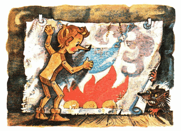

Setelah kejadian dengan si Jangkrik Berbicara, pondok di kolong tangga menjadi sangat sepi. Hari semakin berlalu, dan perut Buratino juga mulai sepi.
Matanya terpejam dan tiba-tiba terlihat ayam goreng di atas piring.
Melek terbangun; ayam goreng di atas piring menghilang.
Matanya terpejam lagi; terlihat di atas piring, separuh puding semolina separuh selai arben.
Melek; tidak ada puding semolina separuh selai arben di atas piring. Dari situ Buratino mengerti, bahwa dirinya lapar bukan main.
Dia bergegas ke perapian dan menyodorkan hidungnya ke uap ketel yang mendidih di atas api, tapi batang hidung panjang Buratino malah menancap melubangi ketel itu, sebab, sebagaimana kita ketahui, baik perapian, dan api, dan asap, dan ketel, itu semua hanya dilukis oleh si miskin Carlo pada selembar kanvas usang.
Buratino menarik hidungnya lalu mengintip ke dalam lubang; dibalik kanvas yang menempel di dinding itu ada semacam pintu kecil, tapi disitu sudah dikerumuni jaring laba-laba, seolah tak pernah dibuka.
Buratino lanjut meraba-raba ke setiap pojokan; tidak ditemukan secuil pun kerak roti atau tulang ayam, sisa-sisa kucing.
Ah, tidak ada apapun, si Carlo miskin tidak punya persediaan apapun untuk makan malam!
Tak sengaja dia melihat di dalam keranjang serpihan kayu ada sebutir telur ayam. Dia pungut, dia letakkan di ambang jendela lalu dengan ujung hidungnya "tuk-tuk" dia pecahkan cangkangnya.

Suara menciak-ciak dari dalam telur:
- Terimakasih, manusia kayu!
Dari pecahan cangkang telur itu keluar seekor pitik berekor bulu dan bermata lucu.
- Sampai jumpa! Mama Ayam sudah lama menungguku di halaman.
Lalu pitik itu melompat keluar dari jendela; itulah semua yang dia saksikan.
- Oy, oy..../Buratino merengek/ aku ingin makan!...
Hari pun telah berlalu, di dalam pondok remang-remang lembayung senja.
Buratino terduduk di samping lukisan perapian, dari lapar pelan-pelan cegukan.
Dia melihat; dari arah ujung kolong tangga, dari bawah lantai, muncul kepala gendut. Merangkak naik, mengendus-endus dan keluarlah seekor hama berwarna abu-abu berkaki pendek.
Dengan santai ia berjalan menghampiri keranjang serpihan kayu, menyelinap masuk, mengendus dan mengorek-orek; lalu dengan jengkel dia ubek-ubek serpihan kayu itu. Rupanya ia sedang mencari telur, yang sudah dipecahkan Buratino.
Lantas ia keluar dari keranjang itu dan menghampiri Buratino. Ia mengendus-endusnya, menyosor-nyosor hidung hitam dengan empat helai kumis panjang di kedua sisinya. Dari tubuh Buratino tidak tercium aroma makanan; lantas ia pun berlalu, pergi menggusur ekor tipis-nya yang panjang.
Sebagaimana dia belum pernah menjambret ekor! Buratino menjambretnya saat itu.
Ternyata itu adalah si tikus got besar tua galak Susyara.
Dengan takut ia, bagaikan bayangan, menggeruduk ke ujung kolong tangga, Buratino tergusur. Tapi begitu ia melihat, bahwa ternyata itu hanya sekadar bocah kayu; ia pun dengan buas dan bengis berbalik menyerang, berniat untuk mencabik-cabik lehernya.
Kali ini Buratino yang ketakutan, dia lepaskan ekor tikus berdarah dingin itu dan melompat naik ke atas kursi. Si tikus mengejarnya.
Dari atas kursi dia melompat ke jendela. Si tikus mengejarnya.
Dari jendela dia terbang melintasi seisi pondok ke atas meja. Si tikus mengejarnya... dan di situ, di atas meja, ia sambar leher Buratino hingga tumbang, ia gaet dengan giginya, dijatuhkan ke lantai lalu ia seret ke ujung kolong tangga, menuju lubang bawah tanah.
- papa Carlo! /Buratino sempatkan berteriak/
- Aku disini! /Sahut suara tebal/
Pintu mengayun terbuka, masuk papa Carlo. Dia lepas sandal kayu dari kakinya lalu dia lemparkan ke si tikus.
Susyara, melepaskan si anak kayu, giginya mencicit dan ia pun berlalu.
- Begini akibatnya kalau nakal! /tegur papa Carlo, mengangkat Buratino dari lantai. Memeriksanya, apakah masih utuh. Dia pangku di atas lutut, lalu mengeluarkan bawang bombay dari saku, dia kupas/
- Nih, makan!..
Buratino menancapkan gigi laparnya ke bawang itu dan memakannya, menggerus dan mengecap-ngecap. Setelahnya, dia gosok-gosok kepalanya ke pipi papa Carlo yang brewok.
- Aku akan menjadi pintar dan berbudi pekerti, papa Carlo... si Jangkrik Berbicara menyuruhku pergi sekolah.
- Niat yang baik, nak...
- papa Carlo, tapi ngomong-ngomong aku ini "kayu telanjang", anak-anak lain di sekolah akan menertawakanku.
- Hm... /kata Papa karlo sambil menggaruk dagunya yang kasar/ Kau benar, nak!
Dia menyalakan[membakar] lampu, menyiapkan gunting, lem dan beberapa lembar kertas warna. Dia menggunting dan mengelem, membuat jaket dari kertas cokelat dan celana pendek dari kertas hijau-cerah. Membuat sepatu dari kulit bekas bot[11] dan topi-kupluk (topi dengan rumbai-rumbai) dari kaus kaki bekas.
Terpasanglah semua pakaian itu pada Buratino.
- Berpakaianlah dengan bahagia!
- papa Carlo, /kata Buratino/ dan bagaimana juga aku pergi ke sekolah tanpa buku-ABC?
- Hm, kau betul, nak...
papa Carlo menggaruk-garuk kepala belakangnya. Dia sampirkan ke pundaknya jaket usang satu-satunya yang dia punya, lalu pergi ke jalan.
Segera dia kembali, tapi tanpa jaket. Di tangannya dia memegang sebuah buku berisi huruf-huruf yang besar dan gambar-gambar yang menghibur.
- Nih buku-ABC-mu. Belajarlah dengan bahagia.
- papa Carlo, terus jaketmu mana?
- Jaket itu aku jual... Tak apa, aku akan terbiasa dan... yang penting kau hidup bahagia...
Buratino mendekapkan hidungnya ke tangan dermawan papa Carlo

- Aku akan belajar, tumbuh dewasa, dan membelikan untukmu seribu jaket baru...
Buratino membulatkan niatnya, di malam pertama dalam hidupnya ini, akan berhenti nakal, sebagaiamana yang diajarkan si Jangkrik Berbicara kepadanya.